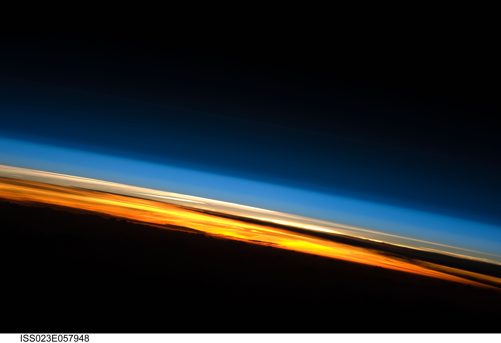
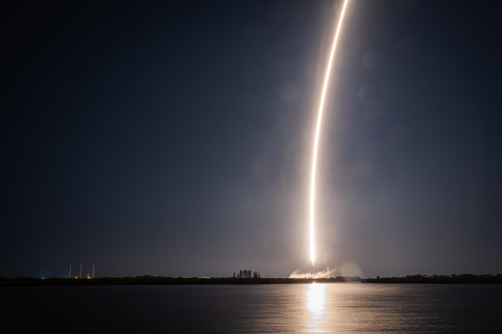

Índice · quatro exercícios de direção de arte
Quatro experiências em HTML, CSS e JavaScript. Direções de arte distintas, narrativas autorais e, agora, um foguete inteiro gerado em código: Lodestar L-1.

